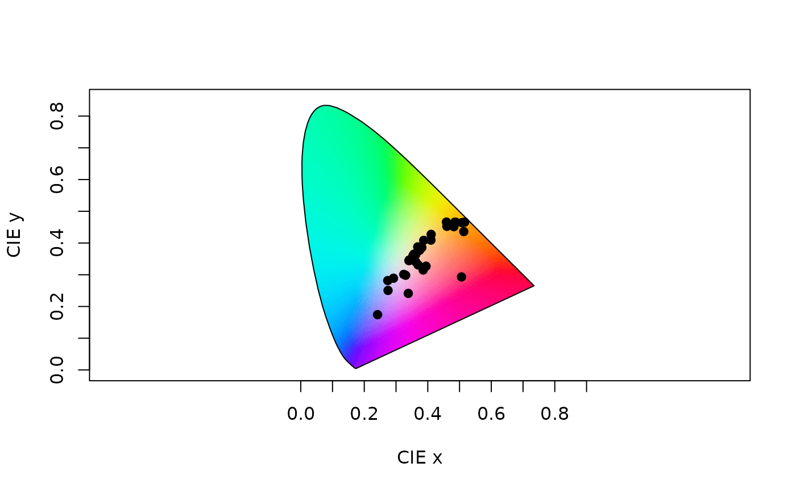

Plot a CIE (XYZ, LAB, or LCH) chromaticity diagram.
cieplot(ciedata, mono = TRUE, out.lwd = NULL, out.lcol = "black", out.lty = 1, theta = 45, phi = 10, r = 1e+06, zoom = 1, box = FALSE, margin = c(0, 0, 0, 0), ...)
Arguments
| ciedata | (required). a data frame, possibly a result from the |
|---|---|
| mono | should the monochromatic loci (the 'horseshoe') be
plotted when |
| out.lwd, out.lcol, out.lty | graphical parameters for the monochromatic loci outline. |
| theta | angle to rotate the plot in the xy plane when |
| phi | angle to rotate the plot in the yz plane when |
| r | the distance of the eyepoint from the center of the plotting box
when |
| zoom | zooms in (values greater than 1) or out (values between 0 and 1) from the plotting area
when |
| box | logical. Should the plot area box and axes be plotted? (defaults to |
| margin | vector of four numbers specifying drawing margins for CIELAB plot (defaults to c(0,0,0,0)) |
| ... | Additional graphical options. See |
References
Smith T, Guild J. (1932) The CIE colorimetric standards and their use. Transactions of the Optical Society, 33(3), 73-134.
Westland S, Ripamonti C, Cheung V. (2012). Computational colour science using MATLAB. John Wiley & Sons.
Stockman, A., & Sharpe, L. T. (2000). Spectral sensitivities of the middle- and long-wavelength sensitive cones derived from measurements in observers of known genotype. Vision Research, 40, 1711-1737.
CIE (2006). Fundamental chromaticity diagram with physiological axes. Parts 1 and 2. Technical Report 170-1. Vienna: Central Bureau of the Commission Internationale de l Eclairage.
Examples
data(flowers) # CIEXYZ vis.flowers <- vismodel(flowers, visual = "cie10", illum = "D65", vonkries = TRUE, relative = FALSE) xyz.flowers <- colspace(vis.flowers, space = "ciexyz") plot(xyz.flowers)